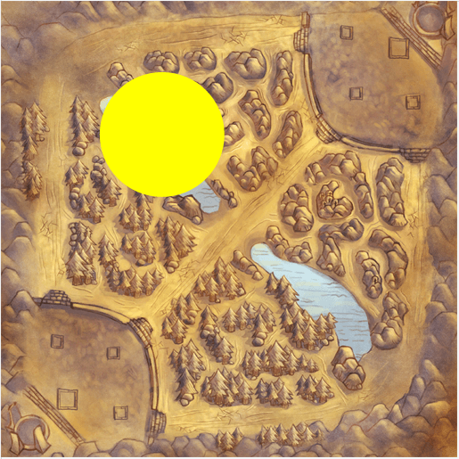
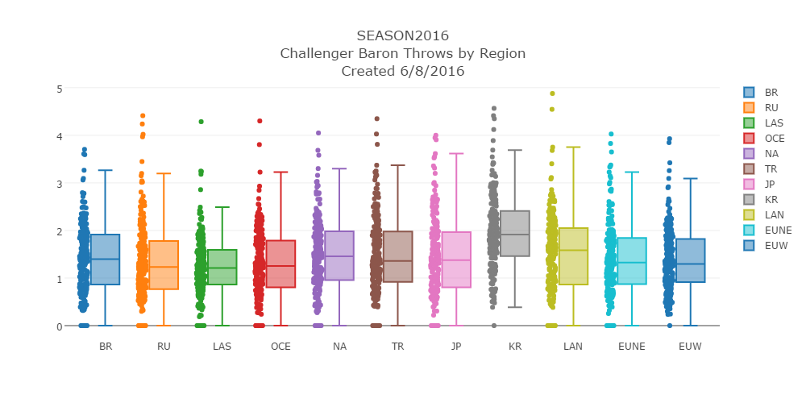

Abstract
This is a data analysis exercise to answer the question of: Which region throws the most at baron? If you are not familiar with the game, League of Legends, it is a Multiplayer Online Battle Arena (MOBA). In short, the game consists of two teams that try to destroy one another's nexus. Each team consists of five players and each player gets to choose a champion to play as.
Although destroying the nexus is the winning objective, there are many small objectives within the game. Some of these objectives consist of killing monsters. Baron Nashor (Figure 1) is the toughest monster to kill within the game and on occassion poor choices by players causes a Baron Throw. A Baron Throw can be defined as a poor choice in an attempt to kill Baron Nashor that causes your team to die. Within my analysis I found that there is not a major difference between the challenger players within different regions. However, there is enough of a difference to show that some regions do throw at baron more than others by a small margin.
Methods
Introduction
Riot Games' League of Legends API was used to collect data for this analysis. The API provided endpoints for fetching challenger players, summoner matches and match information. The overall process consisted of fetching data from the API, classifying matches for Baron Throws and finally visualization of the data.
Data Collection
Several scripts were created in the process of collecting the data. Snakemake, a Python workflow engine, was used to help streamline the process. The benefit to using Snakemake is that it enables you to resume the workflow from where it left off in the event of a software bug, power outage or hardware failure. Be aware that Snakemake is not magic. You must create your data pipeline in a way that it can be resumed in the event of a failure.
 Figure 2. Snakemake Data Pipeline
Figure 2. Snakemake Data Pipeline
The first step was to query for the players within the challenger tier for all 11 regions (Table 1). As of the year 2016, each region contains 200 challenger tier players. Analyzing every match that a player has participated in would be exhaustive. For example, some players started playing the game when it was first created in 2009. Assuming the player only played on that account, it could be thousands of games to analyze. To narrow down match history, the matches played during the 2016 season were collected for each player. On average this consisted of 335 games per player.
Table 1. Regions
|
Region
|
Code
|
|
Brazil
|
BR
|
|
Latin America North
|
LAN
|
|
Oceania
|
OCE
|
|
Turkish
|
TR
|
|
Latin America South
|
LAS
|
|
Russia
|
RU
|
|
European Union West
|
EUW
|
|
Japan
|
JP
|
|
Korea
|
KR
|
|
North America
|
NA
|
|
European Union Northeast
|
EUNE
|
The longest process in the data pipeline is during the match fetching phase. This is due to the massive number of API requests that need to be made; one for each match. Approximately 750,000 API calls to fetch match information was required. During each API call consideration of rate limiting and service instability must be handled. Once the match is fetched it is classified as a Baron Throw or not and written to a flat file so that it can be aggregated for data visualization. Data aggregation consists of grouping each player's matches from each region to determine the number of Baron Throws that occurred within their match history. The Baron Throw rate is a simple division of Baron Throws / matches played. Furthermore each aggregated result is dumped in JSON format and uploaded to the web server so that it can be visualized. The web page makes use of a JavaScript plotting library; Plotly.js.
Baron Throw Classification
In order to determine if a baron throw really occurred, time series analysis and positional analysis was required. Without positional analysis it would be difficult to know for sure if a Baron throw really occurred. This is due to the location of Baron being relatively small compared to the entire game map. So only looking at deaths within the timeframe of the Baron kill event may not be very accurate.

Figure 3. Summoner's Rift Baron Throw Zone
The match data provided by Riot includes events within the form of a time series and XY coordinates of where the event occurred. Purely analyzing kill events within a given time span is not sufficient to determine if a Baron Throw event occurred. For example, a small group of players could be killed at the bottom right corner of the map while baron was taken successfully by other players. To make the classifier as accurate as possible, a radius around Baron Nashor was created (Figure 3) and used to determine if player deaths coincided within this area. Since Baron Nashor does not spawn until 20 minutes into the game, the search space could be narrowed down to all events after 20 minutes. Once a Baron Nashor kill event was found, events within a 30 second period before and after is analyzed for player deaths. If 4 or 5 players were killed on the same team within the baron zone and within the thresholds of 30 seconds before the baron event or 30 seconds after the baron event, a Baron Throw occurred. Figure 4 shows the classification algorithm in pseudocode form.
BARON_X = 5007
BARON_Y = 10471
BARON_R = 1947
function inBaronZone(x, y)
distance_x = BARON_X - x
distance_y = BARON_Y - y
square_dist = (distance_x * distance_x) + (distance_y * distance_y)
square_r = BARON_R * BARON_R
return square_dist <= square_r
end
function hasBaronKills(match)
match.BaronKills > 0
end
function playerTeam(match, summoner_id)
return blue or red accordingly
end
KillEvent class {
KillerID integer
ParticipantID integer
X integer
Y integer
}
BaronEvent class {
FrameIndex integer
Time integer
KillerID integer
KillEvents array
}
function isBaronThrow(match, summoner)
if not hasBaronKills(match)
return false
end
baron_events = array
for each index, timeline event
if timeline event < 20 minutes
continue
end
if timeline event == baron kill
create baron event instance with values
add baron event to baron_events array
end
end
player_team = playerTeam(match, summoner_id)
// Look at one frame before and after the baron event for kills
for each baron_events
for each timeevent in range of baron_event.FrameIndex -1 to baron_event.FrameIndex + 1
if kill event and event 30 seconds before baron or 30 seconds after baron
create kill event instance with values
add kill event to baron event
end
end
end
is_throw = false
for each baron_events
blue_deaths = 0
red_deaths = 0
for each baron_event.kill_events
if inBaronZone(kill_event.x, kill_event.y)
if kill_event.ParticipantID is blue team
add 1 to blue_deaths
else
add 1 to red_deaths
end
end
if player_team == blue && blue_deaths >= 4 or player_team == red and red_deaths >= 4
is_throw = true
break from loop
end
end
end
return is_throw
end
Figure 4. Baron Throw Classifier Pseudocode
Conclusion

Figure 5. Challenger Throw Rate by Region
While a significant margin is not illustrated in Figure 5, a small difference of Baron Throws is observed across each region. Korea shows the highest median rate of 1.9% for baron throws and Latin America South shows the lowest rate of 1.23% for Baron Throws. The region in which a player plays League of Legends does not seem to be correlated with the Baron Throw rate. The small differences amongst regions may indicate the importance placed on Baron Nashor between these regions, however further analysis would need to be performed. A better observation for Baron Throw analysis could consist of comparisons amongst player ranks within each region. The player rank, according to Riot, illustrates the skill level of a player. Analyzing the throw rate of a player in the lowest tier, bronze, against the highest tier, challenger, should show a significant difference.
To see up to date and more graphs at the regional level, please visit lolstats.tylermarrs.com/baronthrows.